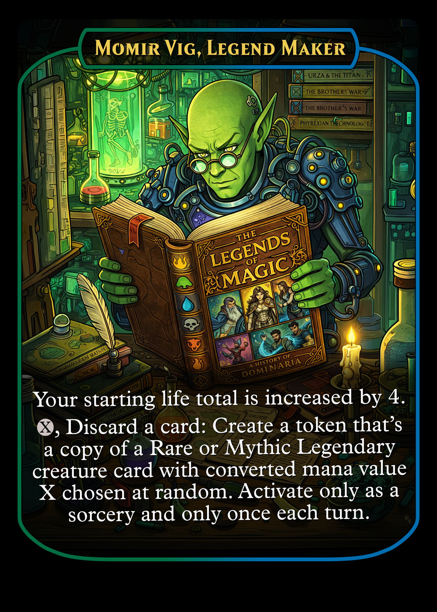
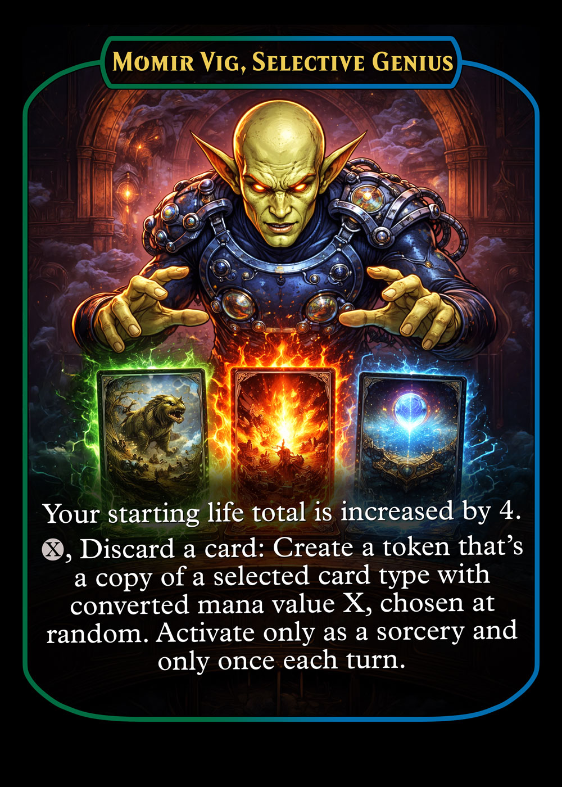
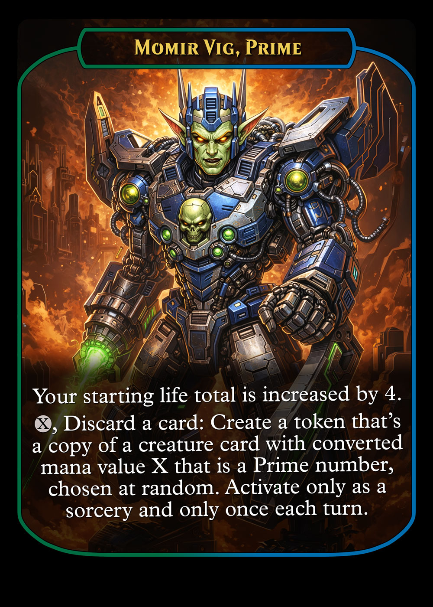
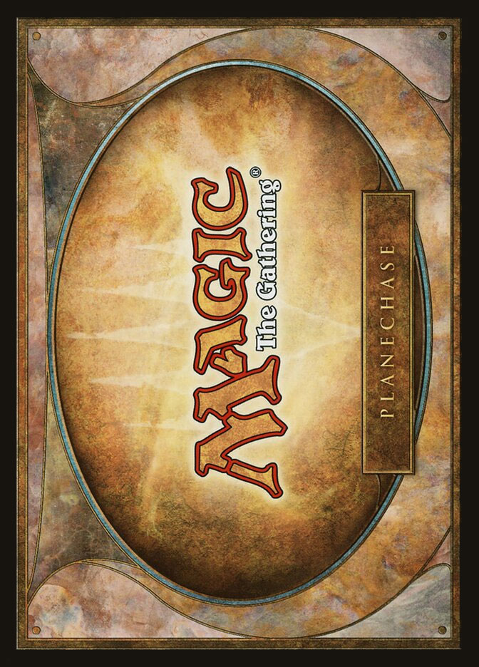
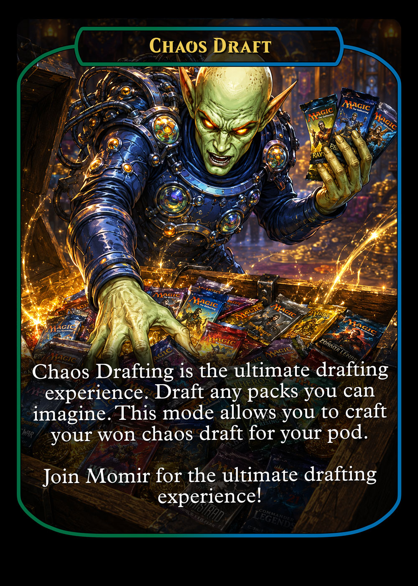
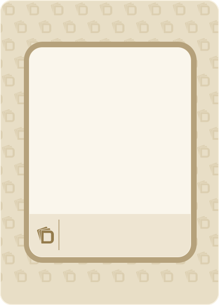

⤨
Chaos Draft
Draft from any set in history, or from your own custom packs and sets.
Custom Set Creation & Playtesting Tool
Draft from any set in history, or from your own custom packs and sets.
Turn a little mana into something unexpected.
Create, manage, and test your own sets and cubes.
Discover a deck and take it for a spin.
Make Deckadence your own.
Create your first campaign.
From an idea to a booster.






Borrow the antique-gold frame, warm inner edge, parchment footer, and monogram/divider motif. Keep the existing outer-body background. No foil, inner repeating patterns, or added animation in this first pass.